1. 背景需求 放眼身边，类似“有人敲门，室友不在而自己在床上”等情况下，开门不便；出寝室忘带钥匙的囧境时有发生。就以上两类生活中的“痛点”，结合课程内容，我们又想到手机和校园一卡通都不在身边的情况却少得多，故而萌生了DIY设计基于蓝牙通讯与射频识别的安卓、Arduino跨平台智能门禁系统的想法，实现“刷卡开门”与“遥控开门”的功能。 2. 实现方案
实现上述功能，门禁系统可分为电子系统（Arduino平台系统+Android平台APP）及机械系统两部分。 2.1 电子系统概览 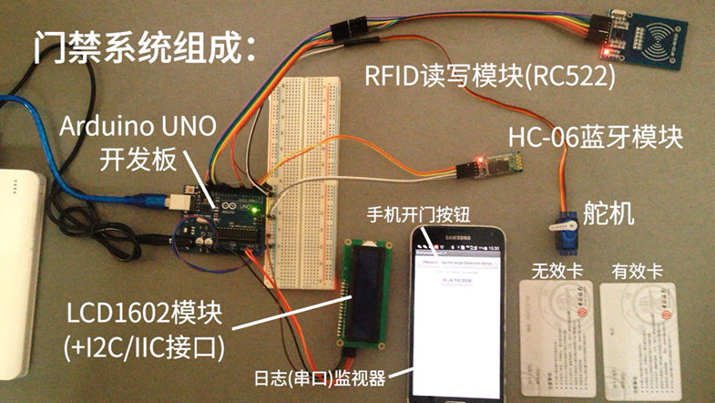 【图1】门禁电子系统组成（DEMO视频1-桌面） 2.2 Arduino平台系统 n 硬件介绍 Ø Arduino UNO R3单片机开发板 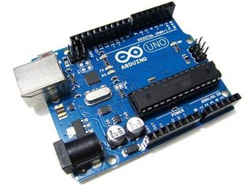 【图2】Arduino UNO R3开发板 电子系统使用Arduino UNO R3单片机开发平台。 本设计中单片机需要同时通过SPI连接RC522射频读写模块，通过I2C/IIC总线接口连接LCD1602液晶模块，通过串口与蓝牙模块（Android端）交互。TI LaunchPad（MSP430G2553）开发板SPI数据接口与I2C/IIC总线接口复用，而Arduino UNO R3不存在这一问题，无需分时复用，大大降低程序复杂度。 同时，Arduino具有更为优秀、成熟的拓展性，可移植性。 Ø RFID-RC522射频读写模块（SPI接口） 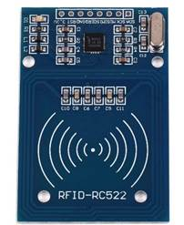 【图3】RFID-RC522射频读写模块 RFID-RC522非接触式IC读写模块，支持遵循ISO 14443A/ MIFARE®规范的各类IC卡，常见如S50卡（校园卡，宾馆房卡，纽扣异形卡等），兼容标准SPI接口。 SPI接口通信以主从方式工作，通常有一个主设备和一个或多个从设备，需要至少4根连接线（单向传输最少3根），分别是SDI/MISO（主入从出）、SDO/MOSI（主出从入）、SCL/K（时钟）、SS/CS（主从切换/片选）。 Ø LCD1602液晶模块（I2C/IIC总线接口） 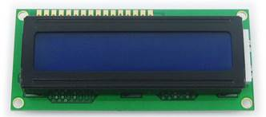 【图4】LCD1602液晶模块 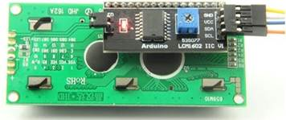 【图5】1602液晶I2C/IIC总线转接板 LCD1602低功耗液晶模块可显示16×2个字符，内置 192种字符（160个5×7点阵字符和32个5×10点阵字符），具有64个字节的自定义字符RAM，可自定义8个5×8点阵字符或四个5×11点阵字符。 I2C/IIC是同步通信的一种特殊形式，通过串行数据（SDA）线和串行时钟 （SCL）线在连接到总线的器件间传递信息，具有接口线少，控制方式简单，器件封装形式小，通信速率较高等优点。 Ø HC-06主从一体蓝牙模块 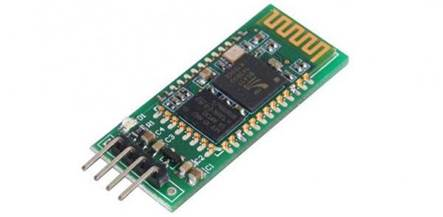 【图6】HC-06主从一体蓝牙模块 HC-06主从一体蓝牙模块采用低成本、低功耗CSR芯片，支持蓝牙v2.0协议标准，可以实现终端在空旷环境下10M内通讯，使用广泛。 Ø Tower Pro SG90舵机 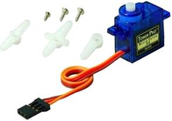 【图7】Tower Pro SG90舵机 舵机（伺服电机）由直流电机、减速齿轮组、传感器和控制电路组成，可根据指令（PWM模拟量）旋转到0至180度之间的任意角度并保持静止，常用于船舶、航模、机器人等各领域。 n 模块接线图 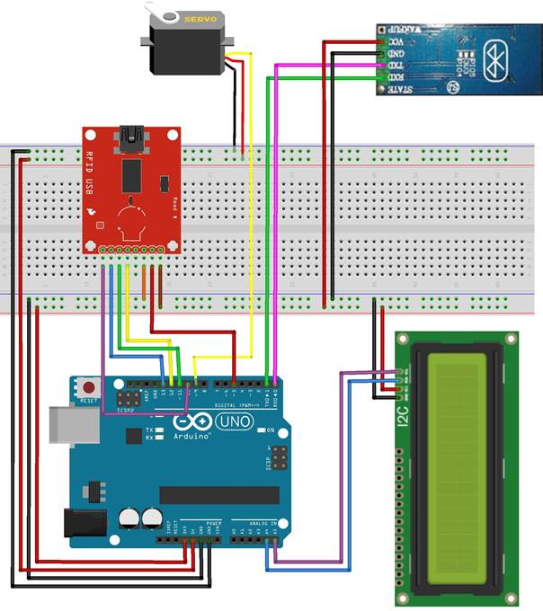 【图8】Arduino系统模块接线图 n 单片机程序设计 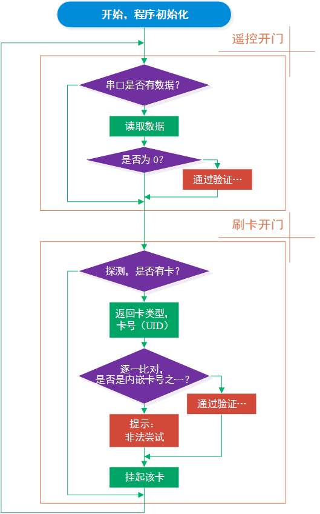 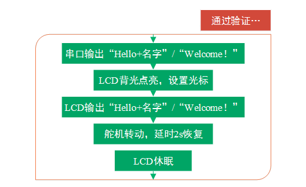 【图9】Arduino单片机程序流程图（源码见“4. Appendix”） 2.3 Android平台APP 针对目标需求对于Android程序功能、界面等要求低，借助APP Inventor 2图形化编程平台实现。 n APP Inventor 2程序思路 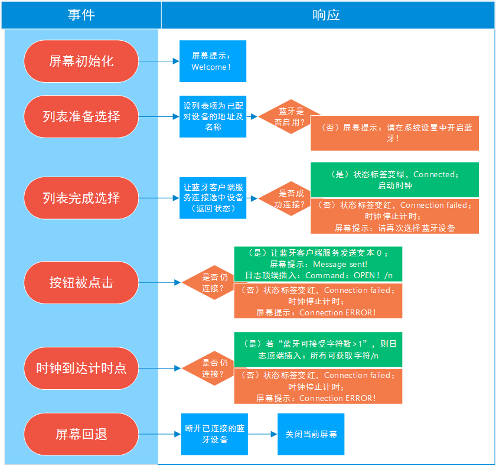 【图10】Android平台程序思路图示（源码见“4. Appendix”） n APP 响应界面 贴合便捷开门的初衷，用户界面（UI）设计从简，提高程序加载响应速度。 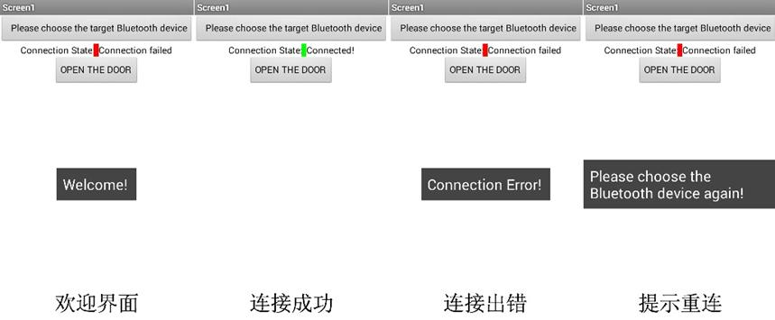 【图11】Android平台APP响应界面 2.4 机械系统 综合考虑需求与实际情况，为降低改造难度，且不影响正常门内转动开门、门外钥匙开锁，我们保留原有的门锁结构，确定了“舵机驱动牵引门把手转动打开门锁”的设计思路。 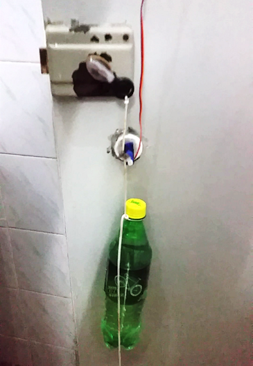 【图12】“舵机-门锁”传动机械结构实拍图 n 寝室中实际测试效果见“1.3项目成果-DEMO视频2-寝室” n 实际测试中，我们针对发现的问题做了以下几点应对优化： ² 问题：门把手较小，门锁较老，转轴处阻力较大，不易转动； ü 应对：将一把钥匙用热熔胶固定在把手上，增大力臂，同时提供着力点，方便绳索固定、拉动把手。 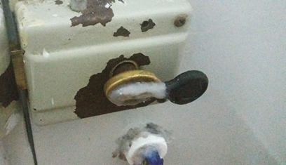 【图13】门锁把手优化实拍图 ² 问题：Tower Pro舵机力量较小（实测5v时失速扭矩约<1.5kg/cm）； ü 应对1：悬挂配重：减少开锁过程锁把所需转动的最小角度，回避转动时阻力最大的区域。（测试时方便调节重量，配重使用灌水饮料瓶） ü 应对2：舵机、绳索、把手相对位置设计：保证门锁死的前提下使初始时更易拉动，最终状态更易达到保持。 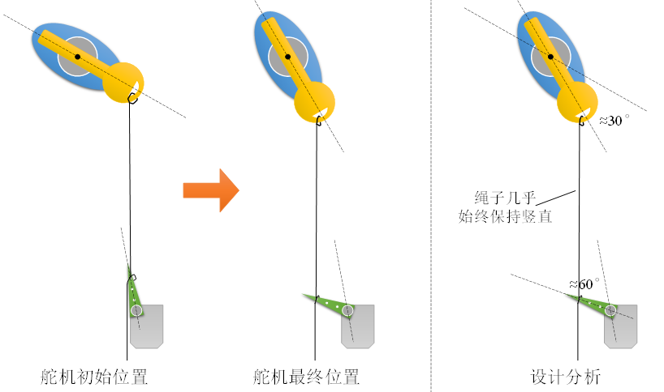 【图14】舵机、绳索、把手相对位置设计示意图 3. 项目成果 运动课程所学知识，完整实现刷卡开门、遥控开门两大预期功能，门禁系统（电子系统+机械系统）经寝室实地调试试用可行。 u 电子系统详细功能演示视频见：DEMO视频1-桌面 u 寝室门禁实地完整演示视频见：DEMO视频2-寝室
4. 特色： 1） 无需另备相关IC卡，支持校园一卡通，方便忘带钥匙等情况； 2） 手机一键遥控开门，替代传统钥匙，切实符合现有需求，有实际应用的价值意义； 3） 门禁系统没有对任何原有设施大规模改造，安装简易，无安全隐患； 4） Arduino平台开发，就其维护便携，拓展功能成熟、强大的特点，该系统后期进一步改进有极大的空间与可能。 5. 改进设想： 1） 舵机对电流要求较大，为保护Arduino且改善现有充电宝供电电路中供电电压不稳的情况，使用开关电源，外加基准源，5v另供。 2） 现有机械传动装置美观性较为欠缺，可制作一个可套入门把手的模具，使使用更美观可靠。同时改用10g以上扭矩较大的Nano舵机，齿轮组传动。 3） 使用Ethernet拓展板，连入网络，实现对门状态的远程监视与控制。 4） 加入4×4按键键盘，实现远程生成访客密码开门功能。 5） 将蓝牙模块改成红外系统，编码库直接加载至现有的其他红外遥控APP中，如遥控精灵等；或单片机加设红外发射传感器，手机蓝牙控制单片机经红外控制寝室空调等。实现寝室各器件的集成控制。 6） 智能寝室，单片机一并控制寝室电灯开关，风扇转速，窗帘开合等。 6. 组员体悟 n 包伟铭（5140219191） 小学期课程期间，我们组运用课程相关知识，从日常生活切入，结合实际，通过蓝牙通讯和RFID射频模块，成功实现具有刷校园卡控制寝室门打开和安卓APP一键遥控功能的寝室智能门禁系统。 动手操作，体验尝试，仅是实现这些看似简单的功能，过程中仍会出现许许多多意料之外的突发状况，前期反复论证心中再有底，到实际动手是仍会出现或多或少的问题需要实践尝试去解决。我想这也是工程的魅力所在。而只有潜下心，全情投入，面对种种出现的问题有恒心、毅力，不浮躁，轻言放弃，最终才能在这最困难也是最有收获的阶段真正收获更多。 感谢组员们全情参与，在实现整个项目的过程中收获了一份记忆深刻的体验，在相关理论、技术应用能力提高的过程中，更收获了许多兴奋与快乐！ n 庞博（5140219190） 小学期学习《基于安卓开发平台的电子综合平台的设计》这门课程，第一次将编程应用在了解决实际需求之上——解决了躺在床上却有人敲门的尴尬情景，出门忘带钥匙的不便情况。 实际成果的诞生给予了我们所有成员极大的成就感，提高了我学习编程语言的积极性和自信心，让我感受到了编程与设计了乐趣。 总而言之，这门课上收获颇多，受益匪浅。 n 罗晶（5140219349） 经过这门课程的学习实践，我主要的感想是要对自己和队友有信心，不要怀疑我们的能力。许多设想看似不可能完成，但通过大家的努力探究、方案改善最终都能将想法变成现实。很多困难其实是纸老虎，比如刷校园卡开门的实现，比如门锁机械装置的设计和动手安装过程。查阅资料、多动脑筋、集思广益，方案最终也就实现了。 感谢小组成员的配合使最终项目成功完成，也感谢这个课让我对安卓平台设计和应用更感兴趣，也使我积累了一定基础知识。 n 林迪（5140219186） 在课程学习中，我接触了App Inventor这一工具，学会了独立开发简易APP；接触了Arduino单片机开发平台及部分模块的使用，学会了利用可视化编程工具编程使单片机完成一些基础任务。 Arduino和Labview有一定的相通之处，学起来很容易上手。故对我这样的初级入门单片机和APP设计的学生而言，这门课是比较实用有效的。 在编写程序过程中，我学会了利用相关网站和学习手册查找相关知识从而自学熟悉相关软件的使用。在小组作业完成过程中，整个小组一起合作，最终完成这一作品，在过程中感受到团队分工合作的重要性。 7. Appendix 7.1 参考资料 [1]. Arduino Uno Introduction. https://www.arduino.cc/en/Main/ArduinoBoardUno. [2015.7.29] [2]. 分享ARDUINO各版本引脚图（2014版）. http://www.geek-workshop.com/thread-11826-1-1.html. [2014-12-4/2015-7-29] [3]. MF-RC522 RFID 在Arduino中的读取-ChinaUnix博客. http://blog.chinaunix.net/uid-23686726-id-3444925.html. [2012-12-20/2015-7-29] [4]. SPI_百度百科. http://baike.baidu.com/link?url=ucB-8FJTuaPWIt_3k2ytmd8fgmMfpoj-0EsYYif49C3tqyX1HYIyMEAdDWELlTx7CwHuhG4he6nS3r2OymqGOq. [2015-7-29] [5]. I2C协议解析| CSDN博客. http://blog.csdn.net/g_salamander/article/details/8016698. [2012-10-17/2015-7-29] [6]. DIYer修炼：舵机知识扫盲. http://www.guokr.com/article/5292/. [2011-01-17/2015-7-29] [7]. SG90 Analog|Tower Pro. http://www.towerpro.com.tw/product/sg90-analog/. [2015-7-29] [8]. 极客工坊-Arduino精华. http://www.geek-workshop.com/portal.php?mod=list&catid=1. [2015-7-29] [9]. Arduino模块库文件自带Example [10]. 《基于安卓开发平台的电子系统综合设计》课件 7.2 程序源码 1） APP Inventor工程文件（Android端源码）--entranceGuard.aia 2） Android端APP安装包 --entranceGuard.apk 3） Arduino UNO程序源码 --entranceGuard.ino 8. 致谢 感谢《基于安卓开发平台的电子系统综合设计》课程张士文老师的教授指导。 感谢该门课程让我们获得这一份充实、有意义的学习体验。学习探索的过程中，在实践能力、工程意识、团队协作、创新精神等方面都深感收获良多。 感谢小学期课程中小组成员积极参与、交流探讨，分工协作，共同进步。 | ||||||||||||||||||||||||||||||||